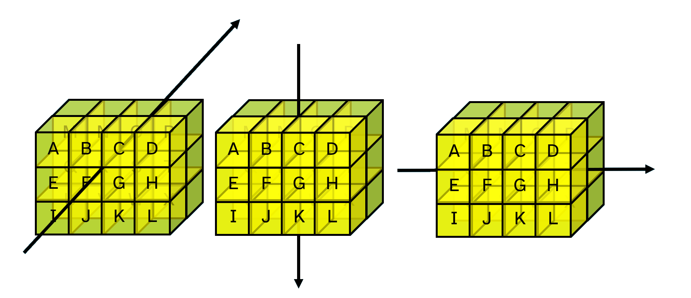

The array model
Viewing array structure
The default display forms of arrays can make it difficult to see why two arrays are different:
1 ⍝ A simple numeric scalar
1
,1 ⍝ A 1-element vector
1
1=,1 ⍝ Are their values equal? Yes
1
1≡,1 ⍝ Are they the same? No
0
The ]box user command is a way to display arrays with extra markings which indicate the structure:
]box on -style=max
'ABCD' ⍝ A 4-element vector
┌→───┐
│ABCD│
└────┘
1 4⍴'ABCD' ⍝ A 1-row matrix
┌→───┐
↓ABCD│
└────┘
1 (2 3) 4 (2 2⍴⎕A) ⍝ A 4-element nested vector
┌→───────────────┐
│ ┌→──┐ ┌→─┐ │
│ 1 │2 3│ 4 ↓AB│ │
│ └~──┘ │CD│ │
│ └──┘ │
└∊───────────────┘
To see what the markings mean, see the help for the ]Display user command:
]Display -??
Version Warning
The ]box user command is not available in version 12.1. Use ]disp or ]display instead.
Fundamentals of high rank arrays
Cells and axes
From the APL Wiki:
A cell is a subarray which is formed by selecting a single index along some number of leading axes and the whole of each trailing axis. Cells are classified by their rank, which may be between 0 (scalars) and the array's rank (in which case the cell must be the entire array). Cells with rank k are called k-cells of an array. A major cell is a cell whose rank is one less than the entire array, or a 0-cell of a scalar.
If the text above feels confusing, don't worry. Possibly after this chapter, and almost certainly after the next section on selecting from arrays, you will be able to read it again and say to yourself "oh yeah, that makes sense". What you need to know for now is that arrays are arranged like rectangles in many dimensions. The three simplest cases should feel somewhat familiar to you.
0 ⍝ A scalar
0
'APL' ⍝ A vector
APL
0 1 2∘.*⍳5 ⍝ A matrix
0 0 0 0 0
1 1 1 1 1
2 4 8 16 32
Now let us look at an array with 3 dimensions. We will call it a cuboid:
⍴cuboid←2 3∘.+3 4 5∘.×4 5 6 7
2 3 4 ← trailing (last) axis
↑
leading (first) axis
In the array cuboid defined above, there are 2 major cells, which are those of rank ¯1+≢⍴cuboid.
2 3 4⍴⎕A
ABCD
EFGH
IJKL
MNOP
QRST
UVWX
≢2 3 4⍴⎕A ⍝ Tally counts the major cells
2
The dimensions of an array are also known as axes. The most major cells, the rank k-1 cells for an array of rank k, lie along the first axis. The least major cells are columns which lie along the last axis.
In Dyalog, arrays can have up to 15 dimensions.
For more details on the APL array model in Dyalog and other array languages, see the APL Wiki article on the array model.
Now that you know how to describe the structure of an array in terms of its sub-arrays, let us look at how to apply functions to sub-arrays.
Matching dimensions
- Experiment with the following examples. Try to describe each one in your own words.
- Describe how the rank operator
⍺(F⍤r)⍵applies a functionFin terms of⍺and⍵. Do not be discouraged by longer expressions and unfamiliar symbols. To help understanding, break down the expression and try pieces of it at a time.
names←↑'Angela' 'Pete' 'Leslie' ⍝ A matrix of names padded with spaces
scores←3 6 8
'Pete '(=⍤1 1)names
scores[names⍳'Pete ']
(∧/names(=⍤1 1)'Pete ')⌿scores
names(∨/⍷⍤1)(⊃⌽⍴names)↑'Pete'
mass←1 3 5 8 4
pos←5 3⍴0 1 3 4 2
{(+⌿⍵)÷≢⍵}mass(×⍤0 2)pos
×⍤0 2⍨⍳10
Version Warning
The rank operator ⍤ is not available in version 12.1. A compatible APL model of the operator which can be used (but might not provide the best performance) is provided at the end of this chapter.
The glyph ⍤ is not available in Dyalog Classic. Rank is instead represented by ⎕U2364.
_Rank_←{⍺←⊢ ⋄ ⍺(⍺⍺ ⎕U2364 ⍵⍵)⍵}
Hint
When applying dyadic functions using the rank operator, use the helper function ,⍥⊂ ravel over enclose (or {⍺⍵} for versions before Dyalog version 18.0) to see how arguments are paired up. For example:
names(,⍥⊂⍤1 1)'Pete '
⍉pos,⍥⊂⍤2 0⊢massFirst- and last-axis primitives
Which of the following functions are affected by the rank operator ⍤ and why are the other functions not affected?
⌽ ⍝ Reverse
⊖ ⍝ Reverse first
+/ ⍝ Plus reduce
+⌿ ⍝ Plus reduce-first
Rank vs. Axis
We have seen two pairs of first- and last-axis primitives.
n←2 3⍴1 2 3 1 0 ¯1
n
1 2 3
1 0 ¯1
+/n ⍝ Sum along the last axis
6 0
+⌿n ⍝ Sum along the first axis
2 2 2
'-'⍪2 3⍴'DYALOG' ⍝ Catenate first
---
DYA
LOG
'|',2 3⍴'DYALOG' ⍝ Catenate last
|DYA
|LOG
Some functions and operators can be used along specified axes using the function axis operator [] (more duplicitous symbols).

Compare the behaviour of the monadic function ⊂ enclose when applied with the rank operator ⍤ versus when it is applied using bracket axis (another name for the function axis operator []).
⊂⍤1⊢3 2 4⍴⎕A
┌────┬────┐
│ABCD│EFGH│
├────┼────┤
│IJKL│MNOP│
├────┼────┤
│QRST│UVWX│
└────┴────┘
⊂⍤2⊢3 2 4⍴⎕A
┌────┬────┬────┐
│ABCD│IJKL│QRST│
│EFGH│MNOP│UVWX│
└────┴────┴────┘
⊂⍤3⊢3 2 4⍴⎕A
┌────┐
│ABCD│
│EFGH│
│ │
│IJKL│
│MNOP│
│ │
│QRST│
│UVWX│
└────┘
⊂[1]⊢3 2 4⍴⎕A
┌───┬───┬───┬───┐
│AIQ│BJR│CKS│DLT│
├───┼───┼───┼───┤
│EMU│FNV│GOW│HPX│
└───┴───┴───┴───┘
⊂[2]⊢3 2 4⍴⎕A
┌──┬──┬──┬──┐
│AE│BF│CG│DH│
├──┼──┼──┼──┤
│IM│JN│KO│LP│
├──┼──┼──┼──┤
│QU│RV│SW│TX│
└──┴──┴──┴──┘
⊂[3]⊢3 2 4⍴⎕A
┌────┬────┐
│ABCD│EFGH│
├────┼────┤
│IJKL│MNOP│
├────┼────┤
│QRST│UVWX│
└────┴────┘
For a more in-depth look at the relationship between function rank and function axis, watch the Dyalog webinars on Selecting from Arrays and The Rank Operator and Dyadic Transpose.
A list of functions with bracket-axis definitions can be found on the APL Wiki page for function axis.
Nested arrays
Arrays in Dyalog APL are always collections of scalars, regardless of rank. However, we can create arbitrarily complex scalars by a process known as enclosing. This means putting something in a “box”. It looks like so:
v ← 1 2 3
⊂v ⍝ Enclose the vector 1 2 3
┌─────┐
│1 2 3│
└─────┘
v≡⊂v ⍝ Does the vector v match the enclosed v? Of course not!
0
Boxing a simple scalar returns the same scalar. This becomes very relevant when we learn more about indexing. In technical terms, a simple scalar is a rank-0 array which contains itself as its value.
'a'≡⊃'a' ⍝ The disclose of a simple scalar is itself
42≡⊂42 ⍝ As is the enclose
'abc'≡⊃'abc' ⍝ Disclose on a simple array picks the first element
'abc'≡⊂'abc' ⍝ Enclosing an array results in a nested scalar
Verify that enclosing creates a scalar by checking the rank of ⊂v
Stranding
We introduced stranding to show how it formed vectors before the application of dyadic functions, for example:
2 + 2 2 + 2
2 + 2 (2 + 2)
(2 + 2) 2 + 2
Stranding is a useful way to form arrays. Generally, arrays separated by spaces form vectors. Experiment with the examples below, and notice the difference between stranding a b and catenation a,b.
2 3⍴'DY' 'AL' 'OG'
'a' 'b' 'c'
'a' 'bc'
'a','b','c'
'a','bc'
mixed←3 3⍴1 2 3 'a' 'b' 'c' ⍝ Simple mixed-type array
mixed2←3 3⍴1 2 3 'abc' ⍝ Nested mixed-type array
Below are some more examples to demonstrate the difference between catenation, first-axis catenation ⍪ and stranding. Some of these expressions will generate errors.
tall←5 3⍴'⍟'
long←3 5⍴'⎕'
3 1⍴mixed tall long
⍪mixed tall long
↑mixed tall long
mixed,long
mixed⍪long
mixed⍪tall
3 3⍴mixed,long
3 3⍴mixed tall,long
Note
The functions take ⍺↑⍵ and mix ↑⍵ can fill arrays with prototypical elements.
Try 0=↑mixed tall and ' '=↑tall long.
Enclose Enlist
So enclose ⊂⍵ allows us to box up individual arrays into scalars.
Enlist ∊⍵ removes all of the structure of an array, extracting the leaf nodes and laying them out as a single vector.
∊2 3⍴1 2 'abc' 3 'def' '4'
1 2 abc 3 def4
Why does the 4 appear flush next to def when there is a space between abc and 3?
Depth
The depth of an array can be found using the depth ≡⍵ function. It returns 1+the level of nesting.
Pick and Mix
There are two more useful constructs for modifying array structures: first ⊃⍵ and mix ↑⍵.
First is a special case of pick ⍺⊃⍵, which is a way of selecting items from nested arrays.
Mix will increment the rank while decrementing the depth:
{(⍴⍵)(≢⍴⍵)(≡⍵)}1 3⍴'abc' 'def''ghi'
┌───┬─┬─┐
│1 3│2│2│
└───┴─┴─┘
{(⍴⍵)(≢⍴⍵)(≡⍵)}↑1 3⍴'abc' 'def''ghi'
┌─────┬─┬─┐
│1 3 7│3│1│
└─────┴─┴─┘
- When does
(a b)≡a,b? - When does
(↑a b)≡a⍪b?
Primitive Loops
Experiment with the following expressions to determine what the each ¨ and bind ∘ operators do in this context.
's',¨'ong' 'ink' 'and'
'lph',¨'ong' 'ink' 'and'
(1 2)(2 2)(3 1)⍴¨3 4 5
2 2∘⍴¨3 4 5
(⍴∘3 4 5)¨2 2
Problem set 6
Summary Statistics
-
The 3D array
raingives the monthly rainfall in millimeters over 7 years in 5 countries.
rain←?7 5 12⍴250For each expression below, write a brief description of the resulting statistic. If necessary, consult the hint which follows the group of expressions.
(+⌿⍤1)rain ⍝ Total rainfall for each of 7 years in each of 5 countries +⌿rain (+⌿⍤2)rain (+⌿⍤3)rain ⌈⌿rain (⌈⌿⍤2)rain rain[⍸rain>250]Hint
Look at the shapes of the arguments and the results,
⍴rainand⍴+⌿rainetc.Answers
Although these are simply suggested answers, and the use of terms like "over" and "for each of" in these sentences can be slightly ambiguous, the point we are trying to demonstrate is that by choosing an appropriate arrangement of data, you can use very simple expressions to perform a wide variety of summaries and transformations on that data.(+⌿⍤1)rain ⍝ Total rainfall for each of 7 years in each of 5 countries +⌿rain ⍝ Total monthly rainfall over 7 years for each of 5 countries (+⌿⍤2)rain ⍝ Total monthly rainfall across 5 countries for each of 7 years (+⌿⍤3)rain ⍝ Total annual rainfall for each of 7 years in each of 5 countries ⌈⌿rain ⍝ Highest rainfall for that month of any year across 7 years for each of 5 countries (⌈⌿⍤2)rain ⍝ Highest rainfall across all countries for that month rain[⍸rain>250] ⍝ Months in which rainfall was more than 250mm (empty list)-
Write an expression to find the average monthly rainfall for each individual month over the 7 years in each of the 5 countries.
-
Write an expression to find the average monthly rainfall for each year for each of the 5 countries.
-
Write an expression to find the average annual rainfall over the 7 years for each of the 5 countries.
-
Assign scalar numeric values (single numbers) to the variables
yearscountriesmonthssuch that theraindata can be summarised as follows:⍴(+⌿⍤years)rain ⍝ Sum over years5 12
⍴(+⌿⍤countries)rain ⍝ Sum over countries7 12
⍴(+⌿⍤months)rain ⍝ Sum over months7 5
-
Rank Practice
-
Common Names for Arrays of Rank-n
-
Match the following rank operands with their descriptions. Each use of rank (a to e) pairs with two of the 10 description boxes below.
a b c d e ┌────┬────┬───┬─────┬──────┐ │⍤1 3│⍤2 1│⍤¯1│⍤0 99│⍤99 ¯1│ └────┴────┴───┴─────┴──────┘-----------------------------------------┌─┐ ┌────────────────┐ ┌────────────┐ │⍵│ │major cells of ⍺│ │vectors of ⍺│ └─┘ └────────────────┘ └────────────┘ ┌────────────────┐ ┌─┐ ┌──────────────┐ │major cells of ⍵│ │⍺│ │3D arrays of ⍵│ └────────────────┘ └─┘ └──────────────┘ ┌────────────────┐ ┌────────────┐ │major cells of ⍵│ │scalars of ⍺│ └────────────────┘ └────────────┘ ┌────────────────┐ ┌────────────────┐ │matrices of ⍺ │ │vectors of ⍵ │ └────────────────┘ └────────────────┘ -
For each name below, suggest the rank for arrays with that name.
┌────────┬────────────────────┐ │Scalar │ │ ├────────┼────────────────────┤ │Vector │rank-1 array │ ├────────┼────────────────────┤ │Matrix │ │ ├────────┼────────────────────┤ │Table │ │ ├────────┼────────────────────┤ │List │ │ ├────────┼────────────────────┤ │Cube │ │ ├────────┼────────────────────┤ │4D array│ │ ├────────┼────────────────────┤ │2D array│ │ └────────┴────────────────────┘
-
-
Some Points in Space Revisited
These problems are identical to those about Some Points in Space in problem set 5. This time, create a function which works on vectors and use the rank operator to solve these problems.
The positions of 7 points in 2D space are given by the matrix
pos2:pos2←7 2⍴3 1 3 4 2 7 3-
Write a function
AddVecto add two vectors together:¯1 1(AddVec⍤1)pos2 2 2 2 5 1 8 2 4 0 4 3 3 6 4 -
Write a function
NormVecto normalise a vector so that its sum of squares is1.+/pos2*210 25 53 18 10 20 58
+/((NormVec⍤1)pos2)*21 1 1 1 1 1 1
÷/pos23 0.75 0.2857142857 1 0.3333333333 2 2.333333333
÷/(NormVec⍤1)pos ⍝ Relative proportions stay the same3 0.75 0.2857142857 1 0.3333333333 2 2.333333333
-
-
Find the values of
jandkin each of the two expressions below.-
0 10(×⍤j k)pos20 10 0 10 0 40 0 70 0 30 0 30 0 20 0 30 -
(2×⍳7)(+⍤j k)pos25 3 7 8 8 13 11 11 11 13 16 14 21 17
-
-
Rank Matching
Write a functionR1which uses catenate,with the rank operator⍤to merge a vector and matrix into a single 3D array.'ABC' R1 2 3⍴⍳6A 1 B 2 C 3 A 4 B 5 C 6Hint
You can apply rank multiple times e.g.
f⍤j⍤k. -
Split k-cells
The split function↓⍵splits an array of rank ≥2 by rows, returning an array of shape¯1↓⍴⍵. Use enclose⊂⍵with the rank operator⍤to create a functionSplitwhich always splits an array into a nested vector of the major cells of⍵.Split 3 2 2 3⍴⍳9 ┌─────┬─────┬─────┐ │1 2 3│4 5 6│7 8 9│ │4 5 6│7 8 9│1 2 3│ │ │ │ │ │7 8 9│1 2 3│4 5 6│ │1 2 3│4 5 6│7 8 9│ └─────┴─────┴─────┘
An APL model of the rank operator
The primitive rank operator F⍤k was introduced in Dyalog version 14.0. An APL model compatible with earlier versions is as follows:
_Rank_←{
⍺←{⍵}
⍺ ⍺⍺{⍺←{⍵} ⋄ ⍺ ⍺⍺ ⍵}{
0 1000::⎕SIGNAL ⎕EN
effrank←{0≤⍺:⍺⌊⍴⍴⍵ ⋄ 0⌈⍺+⍴⍴⍵} ⍝ effective rank
cells←{⊂[(-⍺ effrank ⍵)↑⍳⍴⍴⍵]⍵}
(m l r)←⌽3⍴⌽⍵⍵
⎕ML←0 ⍝ needed by ↑⍵
0=⎕NC'⍺':↑⍺⍺¨(m cells ⍵) ⍝ monadic case
x←l cells ⍺
y←r cells ⍵
((⍴x)≡⍴y)⍱0=(⍴⍴x)⌊⍴⍴y:⎕SIGNAL 4+(⍴⍴x)≡⍴⍴y
↑x ⍺⍺¨y ⍝ dyadic case
}⍵⍵{⍵}⍵
}
Reduce on an empty vector?
For your interest, here are some reductions of note. Try to ask yourself why they give the results they do. Could they have been given different definitions?
+/⍬
×/⍬
⌊/⍬
,/'APPLE' 'DOG' 'BISCUIT'
As mentioned previously, more detailed treatments of the rank operator can be found in the Dyalog webinars on function rank.